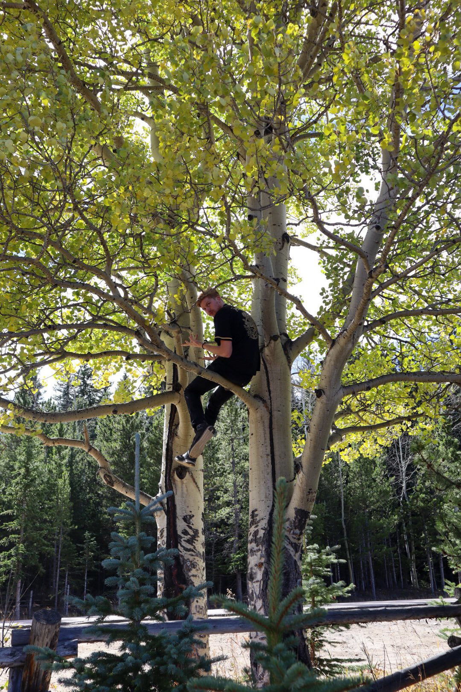
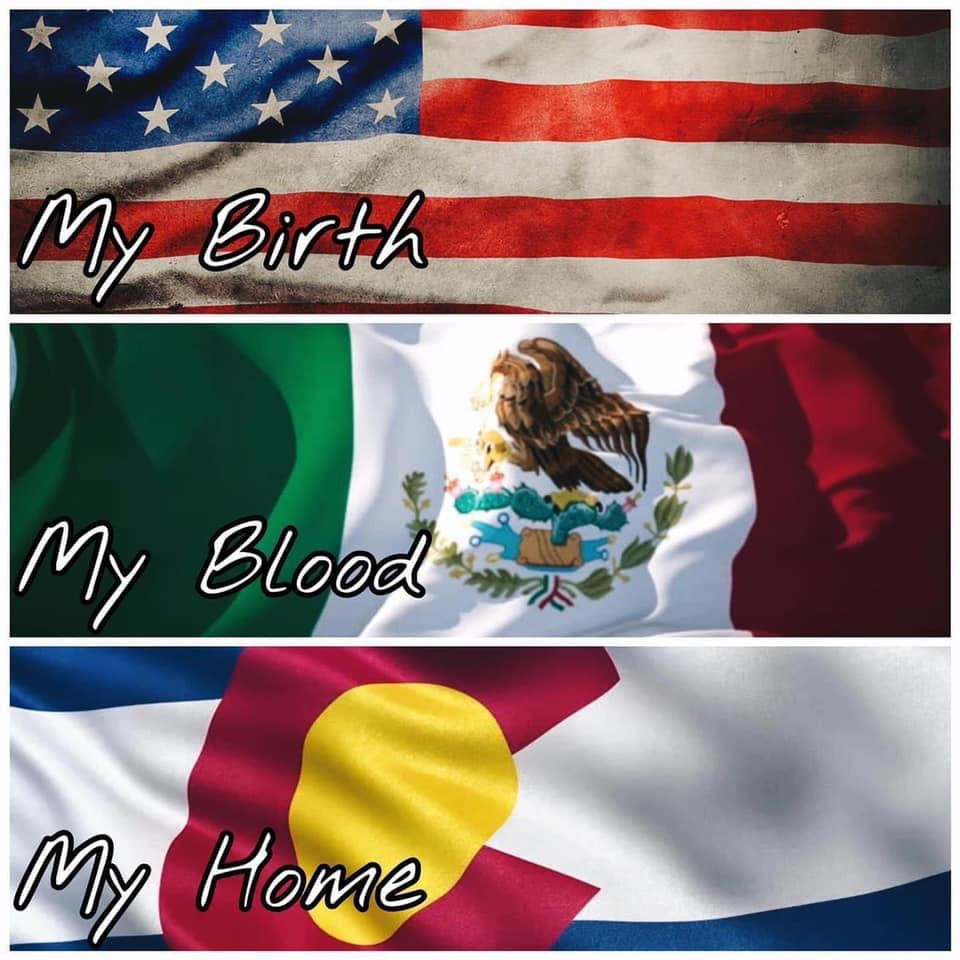

Who am I?
My name is Benjamin Davis. I am one of eight kids, as you can see above. However, I am in the bottom half of the kids. I am still a middle child though, and I love it. I was born in Colorado and lived there pretty much my whole life. I have strawberry-blonde hair, which technically is a strand of red hair meaning yes, I am a ginger. But I accept it without any sort of remorse. However, the sun isn't as accepting of me. But I still love being outdoors and enjoying the sunlight, especially if it is with my family. My family is extremely important to me, and I would do anything for them. I have an amazing relationship with everyone of my siblings and also with my parents. Not in the picture are the two kids of my oldest sister. The two that make me an Uncle. I am extremely blessed to have the gospel in my life and to have the understanding that families can be sealed together for time and eternity as long as we do what we have to do here in this life. Something that you will see when you get us all together, is that there are going to be lots of laughs.
Interesting fact: Everyone older than me in my family was all born in Utah, and the rest of us were born in Colorado.
I am a student at Brigham Young University and am currently in the pre-business program still trying to figure out exactly what it is I want to do. However, I have always had an admiration for business and many great business ideas that I am waiting to implement and see how successful they can be. Something that I love, is that not everyone's path is the same, however, we can all make the most of our situation and more importantly we can make the most out of everyday that we have been given.
Hobbies

There are many things that I like to do. First and foremost, I love the outdoors and being able to enjoy nature. I also love sports, whether it is watching or playing. However if given the opportunity, I would play over watching. There is just something about playing that brings a little adrenaline rush. Some things that I like to enjoy are the following: 
- Hiking
- Camping
- Adventures
- Snow
- Hanging out with friends
- Gaming with my brothers
- Traveling
- Plus A lot more (reach out to learn more ;) )
Ive recently rediscovered the love I have for the starts and our universe. It was re-kindled when I took a descriptive astronomy class at BYU. Ive always sort of been around it from the job that my dad had growing up. However, there is just a peace and awe that comes from seeing the stars in the nighttime with no light pollution. This is something that I want to do more often, and with other people, because stargazing is definitely a must! It gives me a greater appreciation for the creation and for all that the Savior did for us and it is also a subtle reminder that this in not everything.
Home Away From Home
This photo pretty much sums up how my mission affected my life. I served in the Ciudad Juarez, Chihuahua, Mexico Mission during the years of August 2017 to July 2019. It is a place that definitely has my heart even though I was born in Colorado.I had the great opportunity to go back and visit a part of my mission this past July 2021, and it was a special thing to be able to see some of the great people that I met while I was serving the Lord. I wouldnt change it for anything in the world, and if asked to do it again, I would in a heartbeat! Viva Mexico!!
I still frequently talk to people from my mission and also try to continue to use my spanish as often as I can. However, I am not super quick to just to use it, becuase I dont want to come off as judgemental, so I will usually wait until I hear some sort of spanish. Then I get excited to speak with those around me. Its always funny becuase I am literally one you would least expect to speak since I am super White. But, They love it when I do, and then I always get the question of where I learned spanish. Honestly, if it wasnt for my mission, I wouldnt know spanish as well as I do now.